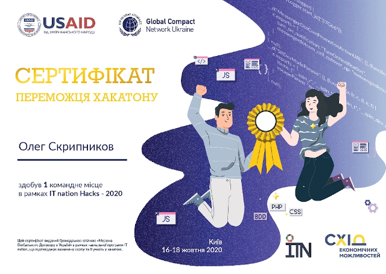

Front-End Developer
Олег Скрипников
Працюю у сфері інформаційних технологій понад 20 років. Весь цей час займався обслуговуванням комп'ютерної та оргтехніки, підтримкою програмного забезпечення, будівництвом та адмініструванням комп'ютерних мереж. В даний час є провідним інженером-програмістом одного з великих підприємств вугільної промисловості.
Хочу змінити вид діяльності на більш творчий та стати web-розробником. Пройшовши курс у рамках навчальної програми «IT nation», шукаю віддалену роботу на позицію Front-End Developer.
Мої проекти
- 1. https://skrypnykov.github.io/air-quality/ [HTML5, CSS3, JS]
- 2. https://skrypnykov.github.io/bird-nest/ [HTML5, CSS3, JS]
- 3. https://skrypnykov.github.io/ecolife-community/ [HTML5, CSS3, Bootstrap, JS]
- 4. https://github.com/Skrypnykov/samurai-way-react/ [JavaScript, React]
- 5. https://github.com/Skrypnykov/bike-shop/ [JavaScript, React]
- 6. http://bestapp.pp.ua/ Перший комерційний досвід
Досвід роботи
Провідний інженер-програміст ДП "Добропіллявугілля-видобуток"
січень 2021 р. - up to now | Україна, м. Добропілля- Консультування, технічна підтримка користувачів АРМ.
- Інсталяція та налаштування програмного забезпечення.
- Адміністрування серверів та мережевого обладнання.
Керівник групи технічної підтримки ДТЕК Сервіс
квітень 2012 р. – січень 2021 р. | Україна, м. Добропілля- Консультування, технічна підтримка користувачів АРМ.
- Інсталяція, налаштування та оптимізація роботи програмного забезпечення.
- Участь у адмініструванні локальної мережі підприємства.
- Адміністративне керування групою.
Начальник відділу технічної підтримки ТОВ "ДТЕК Добропіллявугілля"
серпень 2011 р. - квітень 2012 р. | Україна, м. Добропілля- Консультування співробітників організації як центрального офісу, так і віддалених структурних підрозділів.
- Облік виконуваних робіт, складання передбаченої звітності.
- Здійснювати контроль за дотриманням правил ведення поточного та бухгалтерського обліку комп'ютерної та оргтехніки.
- Адміністративне керування відділом.
Адміністратор комп'ютерної мережі МП "ТіБ" (bitnet.net.ua)
2010 р. - 2011 р. | Україна, м. Добропілля- Адміністрування серверного та мережевого обладнання.
- Надання технічної підтримки абонентам.
- Підключення нових абонентів.
Начальник комп'ютерного відділу ВАТ ЦЗФ "Добропільська"
2007 р. - 2009 р. | Україна, м. Добропілля- Організація технічного обслуговування комп'ютерної та оргтехніки.
- Адміністрування серверного та мережевого обладнання.
- Консультування працівників підприємства.
Інженер-електронік ВАТ "Укртелеком"
2002 р. - 2007 р. | Україна, м. Добропілля- Забезпечує безперебійну роботу серверного та мережевого обладнання вузла Інтернет.
- Надання технічної підтримки абонентам.
- Підключення нових абонентів.
Інженер-програміст МП "Нива"
1996 р. - 2002 р. | Україна, м. Добропілля- Обслуговування комп'ютерної та оргтехніки підприємства.
- Адміністрація комп'ютерної мережі.
- Розробка програмного забезпечення для використання в бухгалтерському обліку.
Начальник відділу обробки інформації Податкова інспекція
1995 р. - 1996 р. | Україна, м. Добропілля- Збір та обробка інформації податкової інспекції.
- Обслуговування комп'ютерної техніки.
Освіта
Міжнародний інститут управління, бізнесу та права.
Менеджмент
вересень 1993 р. - липень 1995 р. | Україна, м. Слов'янськОсвітній проект IT Nation на платформі CODIFUN
Курс ADVANCED FRONTEND WEB DEVELOPER
BOOTCAMP для розробників "Створення MVP для власного портфоліо"
Переможець IT Nation Hacks-2020 у команді BestApp

жовтень 2020 р. | Україна
Освітній проект IT Nation 2.0 на платформі POWERCODE ACADEMY
Курс Frontend Advanced